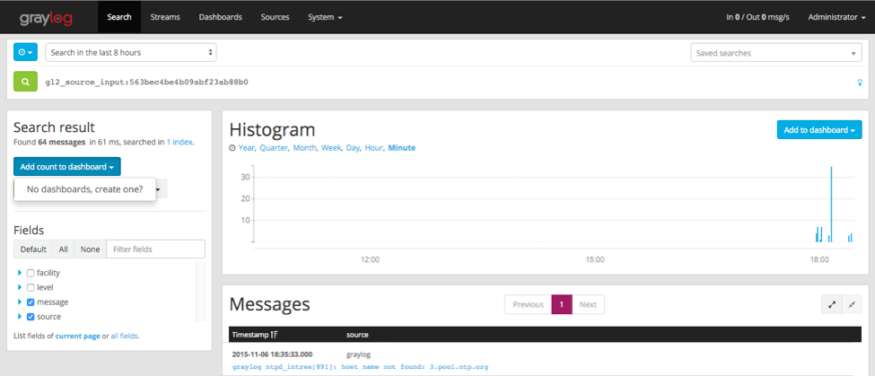
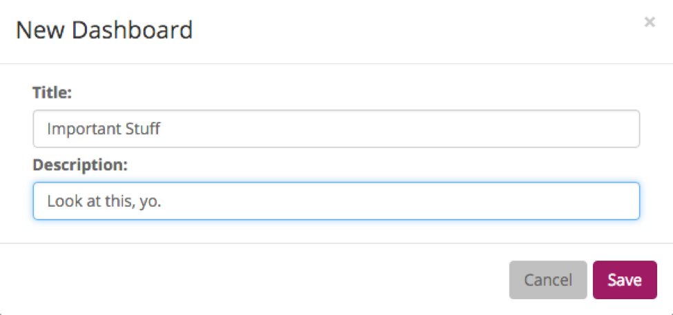
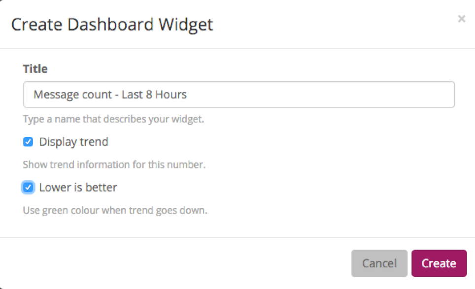
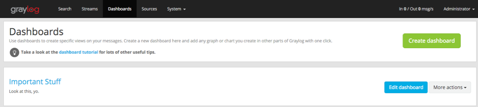
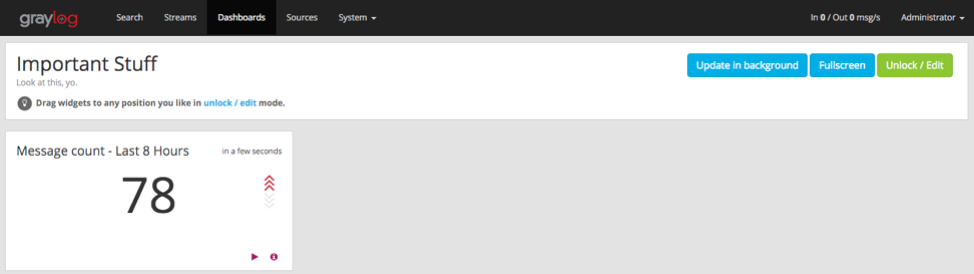
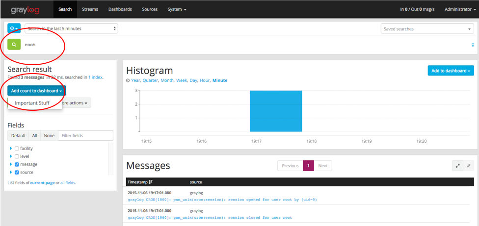
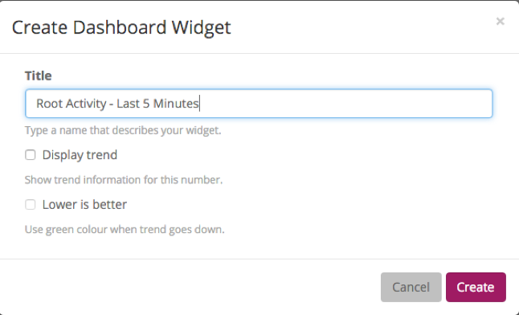
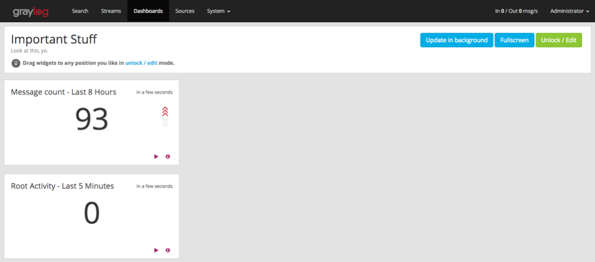
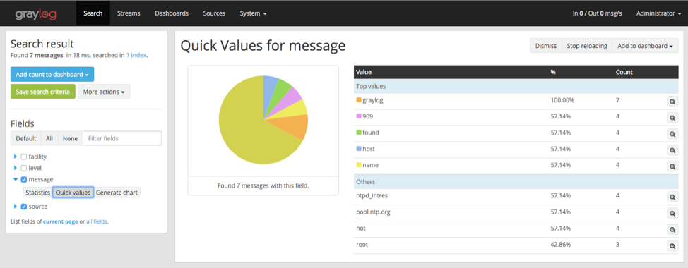

Create Your Dashboard¶
You should be at a screen like the one below. If you dozed off or went to cook some meatballs, go to System -> Inputs, select the Syslog UDP input you created, and hit Show messages.
Now it’s go-time.
You’ve got data coming in, let’s add information to a dashboard to better visualize the data we want to see.
Add a Dashboard¶
We’ll start by adding the message count data to a dashboard. Click Add count to dashboard, and it will say No Dashboards, create one? Yes! Click that.
Give your new dashboard a title and description.
Add a Dashboard Widget¶
Now it will let you create a widget. In this case, we are creating a widget from our search result of message count in the last 8 hours. I like to put a timeframe in the title, and trends are always a big bowl of sunshine.
When you hit create - wa la! Nothing happens. All you UX types, relax, we know. For now, click Dashboards and then the name of your dashboard.
And you’ll end up with the widget you created!
Extra Credit - One more¶
Let’s add a widget for root activity, because that sounds like it may actually be useful. We need to start with a search query for root. Click Search. Type root in the search and select your timeframe. Once the search results come in, click Add count to the dashboard.
Give your chart a title and hit Create.
The new widget is now on the screen. Goob job - you’ve got this!
Go play around. If you want to know how to create more exciting charts and graphs, check out the section below.
Extra Credit - Graphs¶
Let’s start by searching for all messages within the last 1 hour. To do this, click Search, select Search in the last 1 hour, and leave the search bar blank. Once the search results populate, expand the messages field in the Search results sidebar and select Quick Values. Click Add to dashboard to add this entire pie chart and data table to your dashboard.
I like to track password changes, privilege assignments, root activity, system events, user logins, etc. Go knock yourself out and show your co-workers.
Once you have a few widgets in your dashboard, go into unlock / edit mode to quickly edit any widget, rearrange them on your dashboard, or delete. Make sure to click Lock to save!